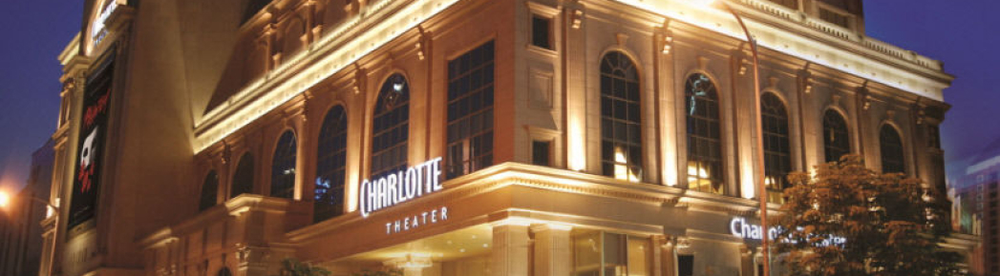
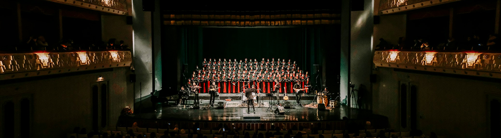
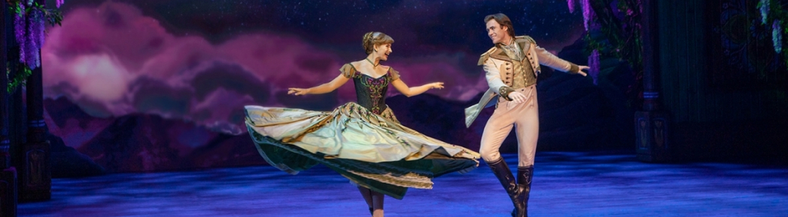

극장 연혁
극장 연혁
HOME > 회사소개 > 극장연혁
극장 연혁CharlotteTheater History
개관부터 오늘까지, 샤롯데씨어터의 역사를 만나보세요
괴테의 소설 <젊은 베르테르의 슬픔> 속 여주인공 '샤롯데'에서 이름을 딴 이 극장은
한국 뮤지컬 시장의 패러다임을 바꾼 상징적인 공간입니다.
2000 - 2006극장의 탄생 배경 및 건립

- 2000년대 초반
- 국내 뮤지컬 시장 규모는 약 150억~250억 원 수준에 불과했고, 뮤지컬만을 위한 전문 공연장이 없어 대관 경쟁이 치열했습니다.
- 건립 계기
- 롯데그룹이 약 450억 원의 사업비를 투입해 서울 잠실 롯데월드 부지에서 대한민국 최초의 뮤지컬 전용 극장 착공에 들어갔습니다.
- 2004년
- 롯데그룹이 약 450억 원의 사업비를 투입해 서울 잠실 롯데월드 부지에서 대한민국 최초의 뮤지컬 전용 극장 착공에 들어갔습니다.
- 2006년 10월
- 개관 하루 전, 국내 뮤지컬 관계자와 언론 500여 명을 초청해 프리뷰 갈라를 열고 새 극장의 무대 시스템을 처음 공개했습니다.
- 2006년 10월 28일
- 디즈니 뮤지컬 <라이온 킹>공연을 시작으로 1,260석 규모의 극장을 공식 개관했습니다. 당시 국내 최고 수준의 뮤지컬 전용 시설로 평가받았습니다.
2006 - 2025초기 시장 개척 및 황금기

- 2006~2007년
- 개관작인 디즈니 오리지널 뮤지컬 <라이온 킹> 한국 초연을 성공적으로 개최했습니다. 약 1년간 장기 오픈런 형태로 상연하며 국내 장기 공연 문화의 기틀을 마련했습니다.
- 2007~2009년
- <맘마미아>, <캣츠>내한공연, <오페라의 유령> 등 브로드웨이 대작을 잇달아 유치하며 국내 뮤지컬 산업의 핵심 거점으로 자리 잡았습니다.
- 2011년
- 개관 5주년을 맞아 로비에 '샤롯데 명예의 벽'을 조성, 역대 출연 배우들의 친필 사인과 무대 사진을 전시하기 시작했습니다.
- 2010~2025년
- <지킬 앤 하이드>, <맨 오브 라만차>, <헤드윅>등 검증된 흥행 대작을 연이어 올리며 '믿고 보는 극장'이라는 흥행 공식을 확립했습니다.
- 2016년
- 개관 10주년을 맞아 로비 옆 유휴 공간을 리모델링해 소규모 쇼케이스·갈라 콘서트 전용 공간인 '샤롯데 리사이틀홀'을 신설했습니다.
- 2019년
- 한국뮤지컬어워즈에서 '올해의 우수 공연장상'을 수상하며 시설과 운영 양면에서 업계의 인정을 받았습니다.
- 2021~2022년
- <지킬 앤 하이드> 공연부터 예매 연동 판매처를 멜론티켓에서 티켓링크로 변경했습니다.
2026 - 현재개관 20주년과 새로운 도약

- 2026년 1월
- 개관 20주년을 맞아 통산 기록을 발표했습니다. 누적 관객 수 약 650만 명, 총 53개의 걸작 상연, 7,100회가 넘는 공연 횟수를 기록했으며, 최근 3년간 평균 객석 점유율은 90%를 상회했습니다.
- 2026년 8월
- 전면 리뉴얼: 무대 바닥 전면 재시공, 오케스트라 피트 정비, 기계 시스템 업그레이드를 완료하고 세계 최고 수준의 객석 의자로 교체하는 등 대대적인 시설 보수를 마쳤습니다.
- 2026년 라인업
및 미래 비전 - 20주년 기념작이자 야심작인 디즈니 뮤지컬 <겨울왕국(프로즌)> 한국 초연을 리뉴얼 첫 무대로 선보였습니다. 단순한 대관 중심의 극장을 넘어 오리지널 IP 확보 및 '자체 제작 극장'으로의 도약을 선언하며 새로운 20년의 역사를 써 내려가고 있습니다.
- 2026년 9월
- '샤롯데 레퍼토리 컴퍼니'를 창단, 상주 제작진과 전속 배우진을 꾸려 자체 제작 시스템의 첫발을 뗐습니다.
- 2026년 11월
- 무대 스태프와 공연 기획 인재를 양성하는 '샤롯데 프로덕션 아카데미'를 개소, 정규 교육 프로그램 운영을 시작했습니다.
- 650만누적 관객
- 53편누적 상연작
- 7,100+누적 공연 횟수
- 90%+평균 객석 점유율